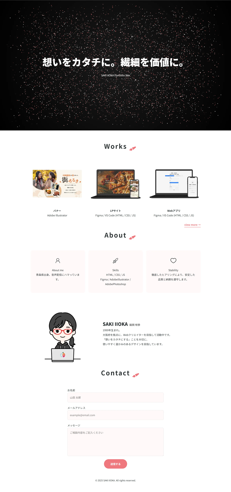
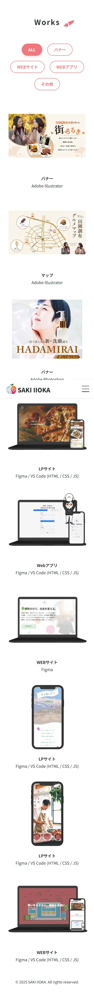

自身
ポートフォリオサイト
WEBサイト
自身のことを紹介するために制作したサイトです。
制作範囲 Range
ディレクション / デザイン / コーディング
使用ツール Tool
Figma / VS Code (HTML / CSS / JS)
制作期間 Period
3日間
サービス設定 Premise
- Figmaでの設計からHTML/CSS/JSによる実装、Adobeツールを用いたグラフィック制作まで一貫した制作を提供。
- 「想いをカタチに」を掲げ、クライアントの意図を繊細かつ高精度な成果物へと昇華させることをサービスの核としています。
ターゲット Target
Web制作や広告運用の外注を検討している企業担当者
制作パートナーを探しているディレクターを想定
スキルだけでなく、作り手の顔が見える安心感や丁寧な対応を重視する層
目的 Purpose
過去の実績を一覧化することで技術的信頼を獲得し、新規案件や採用への窓口とすること。
徹底したヒアリングと納期遵守というプロとしての安定感（Stability）を伝え、依頼への心理的ハードルを下げる。
情報設計 Information
ユーザーの関心度に合わせて「ビジョン→実績→自己紹介→コンタクト」という標準的かつ迷わない動線を採用。
SP版では制作物を縦長に配置し、スマートフォンの操作性に最適化したスムーズな閲覧体験を実現。
デザイン Design
「温もりと信頼の両立」をコンセプトに、テラコッタ系の落ち着いたカラーと手書き風のあしらいで人間味を表現。
#FFFFFF
#2D3436
イラストを用いた親しみやすいメインビジュアル。
各コンテンツは余白を活かしたシンプルなレイアウトに徹し、制作物が際立つよう配慮。
その他 Others
下に添付した画像は、PC・スマホのデザイン完成稿です。

